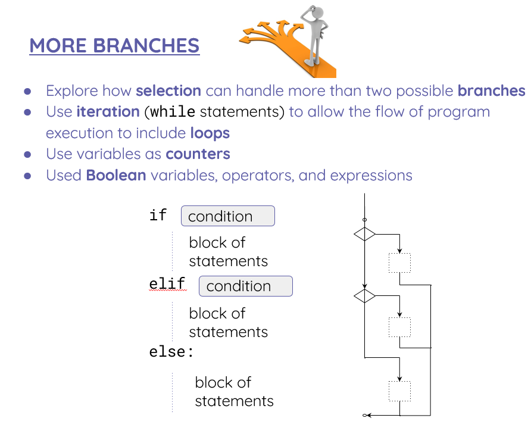

Page 9 of 15 · draft
More branches

VIDEOTUTORIAL: https://classroom.thenational.academy/lessons/more-branches-cmt32d
Activities
14Activity 14
How would you extend this program to give advice to the user on how to dress depending on the weather?
Give advice for when the weather is cloudy, rainy, or snowy. In any other case, display a generic message